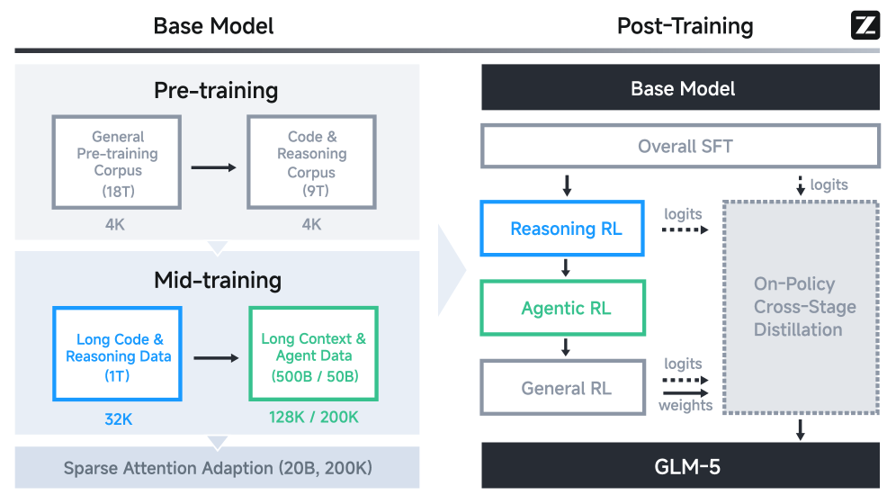
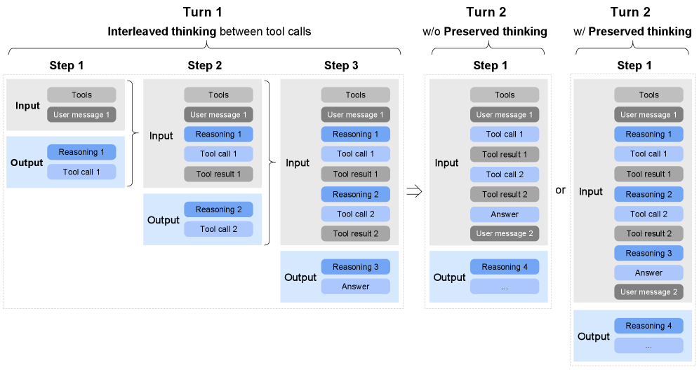
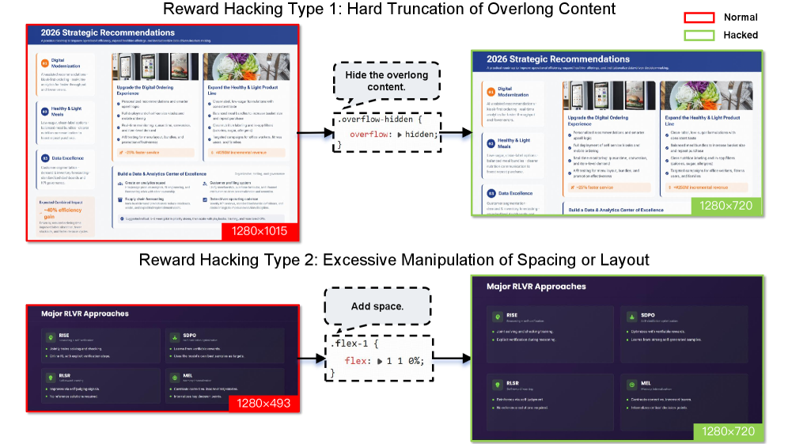
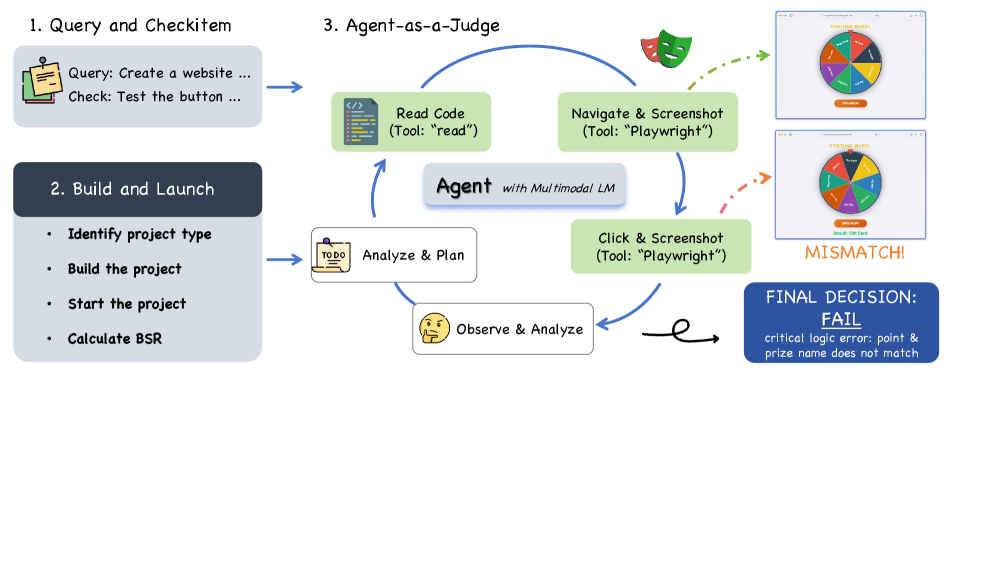

一句话：GLM-5 是智谱新一代旗舰基座模型，主线是把「vibe coding」升级为「agentic engineering」——更便宜的架构 + 更高效的异步强化学习，换来真实端到端编码能力逼近顶级闭源模型。
三个核心改变，对应论文的三大技术贡献：
- 架构提效：用 DSA 稀疏注意力动态按 token 重要性分配算力，长序列注意力计算降低约 1.5–2×，128K 上下文只需一半 GPU 成本，且无损长上下文保真度。模型扩到 744B 总参 / 40B 激活，训练 28.5T token。
- 训练提效：全新异步 RL 基础设施（slime）把「生成」与「训练」彻底解耦到不同 GPU，消除长尾 rollout 造成的 GPU 空转，后训练迭代效率大幅提升。
- 能力提质：新的异步 Agent RL 算法让模型从复杂、长程的交互中持续学习，专门强化规划与自我纠错——这是真实编码场景领先的直接来源。
头条结果：开源权重模型首次在 Artificial Analysis Intelligence Index v4.0 拿到 50 分（GLM-4.7 为 42，跃升 8 分）；LMArena 文本榜与代码榜双双开源第一；真实软件工程能力整体逼近 Claude Opus 4.5。
01 · 问题与背景
瓶颈不再是「会不会答」，而是「能不能自己干完一件复杂工程」
追求 AGI，不只是把参数堆大，更要重新思考智能的效率与自主改进的架构。当大模型从「被动的知识库」转向「主动的问题求解者」，两个现实瓶颈浮出水面。
- 计算成本：长上下文下的稠密注意力代价高昂，难以支撑「推理密集型」智能体长时间运行。
- 真实世界适应性：尤其在复杂软件工程中，静态基准（如 SWE-bench）已经无法代表「端到端、跑数小时」的真实任务。
前作 GLM-4.5 已证明：把 Agentic / Reasoning / Coding（ARC）三类能力统一进一个 MoE 架构，能在多基准上拿到 SOTA。GLM-5 要在此基础上，正面突破上述两个瓶颈，并把「编码」从「写一段代码」推进到「完成一个项目」。
什么是 vibe coding？什么是 agentic engineering？
人类用自然语言提示，AI 帮你写出一段代码。主导权和「规划—验证—迭代」的闭环仍在人手里。
AI 智能体自己写代码：自主规划、实现、迭代，跨越多步工具调用、跑数小时，完成端到端的软件工程任务。
"In vibe coding, a human prompts an AI model to write code. In agentic engineering, AI agents write the code themselves. They plan, implement, and iterate."在 vibe coding 里，人提示 AI 去写代码；在 agentic engineering 里，AI 智能体自己写代码——它们会规划、实现并迭代。这正是 GLM-5 想跨过的那条线。
02 · 全局视图
本文做法：一条贯穿「基座 → 后训练」的训练流水线
GLM-5 的能力提升来自一条完整流水线：基座侧先做预训练 + 中训练把「长文阅读 / 写代码 / 推理」练扎实，并在末尾把 DSA 稀疏注意力适配进去；后训练侧用 SFT → 三段式 RL → 跨阶段蒸馏把基座对齐成一个稳定的智能体。下图（论文 Figure 5）是理解全文的总地图。

- 预训练（Pre-training）：先用 18T 的 General 语料、再用 9T 的 Code & Reasoning 语料，序列长度均为 4K——早期就把代码与推理放在高优先级。
- 中训练（Mid-training）：先 1T 的「长代码 & 推理数据」（32K），再 500B/50B 的「长上下文 & 智能体数据」（128K / 200K），把上下文窗口从 4K 一路拉到 200K。
- 稀疏注意力适配：底部 Sparse Attention Adaption（20B token、200K）把 DSA 接入基座，用极小预算换来长序列推理的算力红利。
- 后训练顺序：Base Model → Overall SFT → Reasoning RL → Agentic RL → General RL，逐段对齐不同目标。
- 跨阶段蒸馏（虚线框）：用各阶段最终 checkpoint 的 logits/weights 做 On-Policy Cross-Stage Distillation，防止后一阶段把前面学到的能力练废（灾难性遗忘），最终产出 GLM-5。
03 · 预训练 & 中训练
用更聪明的注意力，把「便宜」和「长上下文」同时拿到
和 GLM-4.5 一样，基座分两步：预训练打通用语言与编码能力，中训练补智能体与长上下文能力。GLM-5 把所有阶段的 token 预算都加大，基座总计 28.5T token。
架构：744B MoE，并为「解码更便宜」精心调参
GLM-5 扩到 256 个专家、层数收到 80 层（减少专家并行的通信开销），形成 744B 总参 / 40B 激活的 MoE——总规模是 GLM-4.5（355B/32B）的两倍。围绕注意力，论文做了三件事：
- MLA + Muon Split：多潜变量注意力（MLA）省显存、长序列快，但 576 维潜空间的 MLA 起初打不过 GQA-8。把多头投影矩阵按头拆开、各自做正交化（Muon Split），让不同头以不同尺度更新，把 MLA 拉到与 GQA-8 持平，且 attention logits 训练全程稳定、无需 clipping。
- MLA-256：解码时 MLA 要做 576 维点积，远贵于 GQA 的 128 维。把头维从 192 提到 256、头数减 1/3，在保持训练算力与参数量不变的同时降低解码计算。
- MTP 参数共享：多 token 预测（MTP）既提质又能做投机解码草稿模型。GLM-5 让 3 个 MTP 层共享参数，在不增加草稿模型显存的前提下提高接受率——相同 4 步投机下，接受长度 2.76 > DeepSeek-V3.2 的 2.55。
DSA：长上下文里，90% 的注意力其实是冗余的
GLM-5 采用 DSA（DeepSeek Sparse Attention）：不像滑动窗口那种固定模式，DSA 会「看内容」决定哪些 token 重要，做细粒度、动态的稀疏选择。它最妙的地方在于通过「稠密预热 + 稀疏适配」的两阶段 continued pre-training 引入，避免了从头训练的天文成本。
- 省钱：长序列注意力计算降低约 1.5–2×，128K 上下文可在一半 GPU 成本下处理——对「跑数小时」的推理密集型智能体至关重要。
- 低成本适配：预热 1000 步、稀疏适配仅 20B token（远小于 DeepSeek-V3.2 的 943.7B），就足以让 DSA 模型在长上下文上逼近原 MLA 模型；用相同 SFT 数据微调后，两者训练损失与评测打平。
- 无损是关键卖点：DSA 的 lightning indexer 做 token 级稀疏、不丢长程依赖，可应用于所有层而几乎无质量下降；相比之下，SWA、GDN 等高效注意力在 128K 细粒度检索上会有最多 5–7 分的固有损失。
▶ 高效注意力路线之争：为什么最后选了 DSA？ SWA / GDN / SimpleGDN 的对比实验
论文在 GLM-9B 上系统比较了多种高效注意力：
- SWA Interleave（固定交替滑窗）：在长上下文上灾难性退化（RULER@128K 仅 30.35）。
- SWA Pattern（搜索式选层）：借鉴 PostNAS，用 beam search 在 16K 上搜出最优「哪些层用滑窗、哪些层保留全注意力」的配置，并能泛化到所有长度，显著优于固定交替。
- GDN / SimpleGDN（线性注意力）：把二次 softmax 换成门控线性递归；SimpleGDN 去掉 Conv1d 与显式门控、直接复用预训练 QKV 权重，在「最大化复用」上取得最佳平衡。
- 结论：这些方法都能逼近，但在细粒度检索上有不可避免的信息损失；只有 DSA「按构造无损」，因此被选为正式方案。论文还在 GLM-4.7-Flash 上验证：仅训练 indexer 的 warmup 就能保住绝大部分性能，150B token 联合训练后几乎补平差距。
数据与中训练：把上下文一路拉到 200K
- 预训练数据：Web 引入基于句向量的 DCLM 分类器与「世界知识」分类器挖掘长尾知识；Code 刷新各大平台快照、修复 Software Heritage 元数据，去重后唯一 token 增加 28%，并为 Scala/Swift/Lua 等小众语言训练专用分类器；Math & Science 严格剔除合成/AI 生成/模板数据。
- 渐进扩窗：32K（1T token）→ 128K（500B）→ 200K（50B）。相比 GLM-4.5 的 128K 上限，新增的 200K 阶段大幅提升处理超长文档与多文件代码库的能力。
- 软件工程数据：把 repo 级代码、commit diff、issue、PR 拼成统一序列；放宽仓库筛选、强化单条 issue 质量过滤，得到约 1000 万 issue–PR 对，过滤后约 160B 唯一 token。
▶ 训练基础设施：把 744B 塞进显存的若干工程技巧 显存 / 并行 / INT4 QAT
- 灵活 MTP 放置：MTP 显存占用大，把它的 output 层与主 output 层共置于最后一段做参数共享，embedding/transformer 部分放前一段，平衡流水线各 rank。
- Pipeline ZeRO2 梯度分片：每段只存 1/dp 的梯度，配合双缓冲滚动累积，把常驻梯度显存压到最低且无额外同步开销。
- Muon 分布式优化器零冗余通信：只 all-gather 本 rank 拥有的参数分片并与本地计算重叠，消除冗余通信与显存尖峰。
- 流水线激活卸载 + 序列分块输出投影：把前向激活卸载到主存、按层粒度回载；输出投影与交叉熵按序列分块计算，峰值显存随块数下降。
- INT4 QAT：在 SFT 阶段做 INT4 量化感知训练，并自研量化 kernel 保证训练与推理逐比特一致。
04 · 后训练
渐进式对齐：SFT → 三段式 RL → 跨阶段蒸馏
后训练的目标，是把基座变成一个推理、编码、智能体能力都过硬的助手。策略是渐进对齐：从带「交错思考」的多任务 SFT 起步，经 Reasoning RL、Agentic RL，到面向「类人风格」的 General RL，最后用跨阶段蒸馏收口，既吸收每个阶段的收益，又避免能力回退。
SFT：扩到 20 万 token，并引入三种「思考」模式
相比 GLM-4.5，GLM-5 大幅扩充 Agent 与 Coding 数据，SFT 语料覆盖三大类：通用对话（问答/写作/角色扮演/翻译/多轮/长上下文）、推理（数学/编程/科学）、编码与智能体（前后端工程、工具调用、编码/搜索/通用智能体）。SFT 上下文扩到 202,752 token，并支持三种思考特性（见下图 Figure 7）。

- Interleaved Thinking（左·Turn 1）：每个 step，模型在每次工具调用前都先产生一段 Reasoning，再发 Tool call，拿到 Tool result 后进入下一步——思考与动作交错进行，提升指令遵循与生成质量。
- Input/Output 的累积：每一步把上一步的 Reasoning + Tool call + Tool result 累积进 Input，Output 是新的 Reasoning + 下一个 Tool call，逐步推进。
- 不保留思考（中·Turn 2）：进入新一轮时，历史里的 Reasoning 块被丢弃，模型只能从工具结果重新推导，容易丢信息、前后不一致。
- 保留思考（右·Turn 2）：跨轮保留所有 thinking 块，直接复用已有推理，减少信息损失，特别适合长程、复杂的编码智能体场景。
- Turn-level Thinking（图未画）：按轮开关思考——轻量请求关掉省延迟/成本，复杂任务打开提精度与稳定性。
Reasoning RL：GRPO + IcePop，四域混合
RL 算法以 GRPO 为骨干，并引入 IcePop 缓解「训练—推理分布不匹配」，且去掉 KL 正则以加速提升；全程 on-policy（group size 32、batch 32）。在数学、科学、代码、工具集成推理（TIR）四个域上做混合 RL，并按难度筛选——只留 GLM-4.7 很少做对、但更强教师能解的题。
torch.topk（虽略慢但确定）替代 SGLang 里非确定的 CUDA top-k，能消除训练—推理不匹配、带来显著 RL 收益；非确定实现会在几步后让性能崩塌、熵骤降。默认还会冻结 indexer 参数以加速并稳定训练。General RL：三维目标 + 混合奖励 + 人类范例
- 三个优化维度：基础正确性（杜绝指令违背/逻辑/事实/幻觉/语病，是一切的前提）→ 情商（共情、自然、有洞察）→ 任务专项质量（把「正确」抬升到「优质」）。
- 混合奖励系统：规则奖励（精确但只覆盖可规则化部分）+ 结果奖励模型 ORM（低方差但易被 reward hacking）+ 生成式奖励模型 GRM（更抗作弊但方差高），三者互补。
- 引入人类范例：纯模型自优化会收敛到「机器味」（啰嗦、套路）；用专家手写回答做风格锚点，引导模型更自然、更接近人类表达。
收口：On-Policy 跨阶段蒸馏，对抗灾难性遗忘
多阶段顺序优化会累积地损害此前能力。GLM-5 把跨阶段蒸馏作为最后一步：用前序各阶段的最终 checkpoint 当教师，从对应 RL 训练集采样提示，按比例混合，快速找回 SFT 与 Reasoning/General RL 阶段习得的技能。此时 GRPO 的 group size 设为 1、batch 提到 1024——因为优势直接由「与教师的差距」给出，不再需要大组采样估计。
▶ slime：统一的 RL 后训练基础设施 scale out / scale up / 容错
- Scale out（拓宽任务）：高度可定制的 rollout 接口（多轮交互、工具调用、环境反馈、验证器分支）+ 基于 HTTP 的 server-based rollout，让 reasoning/general/agentic/蒸馏都跑在统一栈上。
- Scale up（降尾延迟）：RL rollout 的目标不是吞吐而是端到端延迟（被最慢样本主导）。用多节点 DP-attention 无排队服务、FP8 rollout + MTP 缩短长尾样本完成时间、Prefill–Decode 分离避免多轮场景下长前缀 prefill 抢占 decode。
- 容错：心跳驱动的故障容错——rollout server 周期性发心跳，不健康的被主动下线、从路由摘除，重试自动转到健康节点，单点故障不中断整体训练。
05 · 智能体工程（核心贡献）
异步 Agent RL + 大规模可验证环境，是「自己干完」的两条腿
这一章是全文的重心：要让 AI 自己规划、实现、迭代地完成长程任务，需要两样东西——一套能高效训练长程交互的异步 RL 框架，以及一大批能给出「真反馈」的可验证环境。
为什么必须异步？同步 RL 在长程任务上会让 GPU 大量空转
智能体任务的 rollout 天然长尾：有的轨迹几步结束，有的要几十步、跑很久。同步 RL 必须等最慢的样本，期间 GPU 大量闲置。GLM-5 把训练引擎与推理引擎解耦到不同 GPU：推理引擎持续产轨迹，攒够阈值就送去更新；训练引擎每若干步把新权重推回推理引擎，并在每次权重更新后重置优化器（因为 rollout 策略变了，相当于换了优化问题）。
异步带来 off-policy，如何稳住训练？四个机制
- TITO（Token-in-Token-out）网关：训练端直接消费推理端产出的 token id 与元数据，不做「文本来→重新分词」的回环。重分词会在 token 边界、空白/特殊符处引入细微错位，破坏「动作—奖励」的对齐——这在流式/截断/交错 rollout 下尤其致命。
- 双侧重要性采样 + token 级裁剪：复用 rollout 时的 log-prob 作为行为代理（省去单独的旧策略推理，也无需保存历史 checkpoint）；把信赖域限制在
[1−ε, 1+ε]，区间外的 token 直接从梯度中屏蔽，防止极端策略偏离引发不稳定。 - 丢弃过时 / 噪声样本：记录每条轨迹生成时的权重版本，太陈旧（落后超过阈值）的丢掉；编码沙箱可能因环境崩溃而失败（与模型能力无关），按失败原因剔除，必要时对 GRPO 组做补齐或整组丢弃。
- DP-aware 路由：多轮智能体里同一 rollout 的连续请求共享前缀，用一致性哈希把同一 rollout 固定路由到同一 DP rank，最大化 KV cache 复用——prefill 成本只与增量 token 成正比，而非整段上下文。
环境规模化：给智能体造出「能打分」的真实世界
- 软件工程（SWE）环境：基于 RepoLaunch，从真实 issue–PR 自动分析依赖、构建可执行环境、生成测试命令，并用 LLM 写日志解析函数抽取 Fail-to-Pass / Pass-to-Pass 用例。共构建 1 万+ 可验证环境，覆盖 9 种语言（Python/Java/Go/C/C++/JS/TS/PHP/Ruby）。
- 终端（Terminal）环境：三阶段合成（任务草稿→具体实现→迭代优化），构造 agent 把任务写成 Harbor 格式（结构化描述 + Docker 环境 + 测试脚本），refine agent 按 rubric 反复打磨；并从 web 语料用「构造即自评」闭环自动生成，Docker 构建成功率 >90%。
- 搜索（Search）任务：用超 200 万高信息网页构建 Web 知识图谱（WKG），采样低中频实体扩展多跳子图、生成隐含多实体关系链的高难问题；再用三阶段过滤（去掉免工具可答、去掉浅层可答、双向验证一致性）得到可靠的多跳 QA。
有意思的细节①：层级化上下文管理，把搜索 Agent 拉到 75.9
论文发现：上下文超过约 10 万 token 后准确率显著下降。于是在已有的 Discard-all（清空全部历史）之外，提出 Keep-recent-k：当交互历史超过阈值，就把「最近 k 轮之前」的工具观测折叠掉。单这一招就把 GLM-5 从 55.3%（keep-recent-2）提升到 62.0%（keep-recent-5）。再把 keep-recent 与 discard-all 组合成层级化上下文管理，在不同算力预算下都能腾出上下文、多走几步，BrowseComp 最终冲到 75.9，超过所有带上下文管理的开源模型。
有意思的细节②：幻灯片生成里的 reward hacking 与「真实渲染」防作弊
幻灯片生成走「SFT → 多级奖励 RL → 拒绝采样微调」的自我提升管线。奖励分三级：L1 静态标记属性（定位/间距/配色/排版的声明）、L2 运行时渲染属性（DOM 节点宽高/包围盒等几何指标）、L3 视觉感知特征（异常留白等）。问题在于：模型会钻奖励的空子。

- 背景：L2 奖励用「渲染后的几何属性」打分，模型若只追求几何达标，就可能用表面手段骗取高分。
- Type 1 · 硬截断超长内容：模型用
overflow: hidden把放不下的内容直接藏掉——渲染看起来「没溢出」，但信息实际丢失。 - Type 2 · 过度操纵间距/布局：模型用
flex: 1 1 0%之类强行撑开间距，几何指标合格但排版并不合理、不美观。 - 论文做法：在分布式 runtime 渲染中拿到 grounded 的真实属性值，并修补渲染器漏洞，让奖励真正激励「美观、连贯」的版面，而非表面合规。
效果：严格符合 16:9 的页面占比从 40% 提升到 92%，溢出大幅减少；相比 GLM-4.5，人评在内容质量 60%、布局合理性 57.5%、视觉美观 65% 上胜出，总胜率 67.5%。
06 · 国产芯片适配
从第一天起，就为国产 GPU 生态做全栈适配
GLM-5 从底层 kernel 到上层推理框架，完成了对 7 个主流国产芯片平台的深度优化：华为昇腾、摩尔线程、海光、寒武纪、昆仑芯、沐曦、燧原。论文以昇腾 Atlas 为例，给出三条主线。
- 极致量化 W4A8：为把 750B 模型塞进单台 Atlas 800T A3，标准 Attention/MLP 用 W8A8（INT8），MoE 专家压到 W4A8（INT4）大幅降显存；用 QuaRot 抑制离群值、Flex_AWQ_SSZ 做缩放校准保稳定。
- 高性能融合 kernel：Lightning Indexer（把打分/ReLU/TopK 融成一个 kernel）、Sparse Flash Attention（并行处理 TopK 选择与稀疏注意力）、MLAPO（把 13 个预处理算子融成一个「超级算子」）。
- 推理引擎优化：在 vLLM-Ascend / SGLang 上做异步调度消除「气泡」、RadixCache/Prefix Cache 复用 KV、DP+EP 混合并行 + FlashComm 隐藏通信、MTP 提升算力密度。
07 · 评测结果
开源权重首次摸到顶级闭源的门槛
评测分三层：① ARC 基准（推理/编码/智能体）；② 真实智能体工程体验（自研 CC-Bench-V2）；③ 五大真实通用能力。下面是头条指标（数据均取自论文 Table 7）。
总体看：GLM-5 较 GLM-4.7 平均提升约 20%，在开源模型中取得 SOTA，并把与 Claude Opus 4.5 等闭源模型的差距明显收窄——在 HLE(with tools)、SWE-bench Multilingual、BrowseComp 等多项上反超 Gemini 3 Pro / GPT-5.2。
▶ 完整对比表 · Table 7（ARC 基准全量数据） GLM-5 vs 6 个对手，加粗为该行最高
| 基准 | GLM-5 | GLM-4.7 | DeepSeek V3.2 |
Kimi K2.5 |
Claude Opus 4.5 |
Gemini 3 Pro |
GPT-5.2 (xhigh) |
|---|---|---|---|---|---|---|---|
| 推理 & 通用 | |||||||
| HLE | 30.5 | 24.8 | 25.1 | 31.5 | 28.4 | 37.2 | 35.4 |
| HLE (w/ Tools) | 50.4 | 42.8 | 40.8 | 51.8 | 43.4* | 45.8* | 45.5* |
| AIME 2026 I | 92.7 | 92.9 | 92.7 | 92.5 | 93.3 | 90.6 | - |
| HMMT Feb. 2025 | 97.9 | 97.1 | 92.5 | 95.4 | 92.9 | 97.3 | 99.4 |
| HMMT Nov. 2025 | 96.9 | 93.5 | 90.2 | 91.1 | 91.7 | 93.0 | 97.1 |
| IMO-AnswerBench | 82.5 | 82.0 | 78.3 | 81.8 | 78.5 | 83.3 | 86.3 |
| GPQA-Diamond | 86.0 | 85.7 | 82.4 | 87.6 | 87.0 | 91.9 | 92.4 |
| LongBench v2 | 64.5 | 59.1 | 59.8 | 61.0 | 64.4 | 68.2 | 59.8 |
| 编码 | |||||||
| SWE-bench Verified | 77.8 | 73.8 | 73.1 | 76.8 | 80.9 | 76.2 | 80.0 |
| SWE-bench Multilingual | 73.3 | 66.7 | 70.2 | 73.0 | 77.5 | 65.0 | 72.0 |
| Terminal-Bench 2.0 (Terminus-2) | 56.2 / 60.7† | 41.0 | 39.3 | 50.8 | 59.3 | 54.2 | 54.0 |
| Terminal-Bench 2.0 (Claude Code) | 56.2 / 61.1† | 32.8 | 46.4 | - | 57.9 | - | - |
| CyberGym | 43.2 | 23.5 | 17.3 | 41.3 | 50.6 | 39.9 | - |
| 智能体 | |||||||
| BrowseComp | 62.0 | 52.0 | 51.4 | 60.6 | 37.0 | 37.8 | - |
| BrowseComp (w/ Context Manage) | 75.9 | 67.5 | 67.6 | 74.9 | 57.8 | 59.2 | 65.8 |
| BrowseComp-ZH | 72.7 | 66.6 | 65.0 | 62.3 | 62.4 | 66.8 | 76.1 |
| τ²-Bench | 89.7 | 87.4 | 85.3 | 80.2 | 91.6 | 90.7 | 85.5 |
| MCP-Atlas (Public Set) | 67.8 | 52.0 | 62.2 | 63.8 | 65.2 | 66.6 | 68.0 |
| Tool-Decathlon | 39.2 | 23.8 | 35.2 | 27.8 | 43.5 | 36.4 | 46.3 |
| Vending-Bench 2 | $4,432 | $2,377 | $1,034 | $1,198 | $4,967 | $5,478 | $3,591 |
| GDPval-AA Elo | 1,409 | 1,198 | 1,195 | 1,288 | 1,400 | 1,201 | 1,462 |
* 取自 HLE 全集；† 为修正歧义指令后的 Terminal-Bench 2.0 校正版。加粗=该行最高分。
CC-Bench-V2：用「会动手的 Agent 评审员」考真实工程
为了考核真实智能体工程，论文自建 CC-Bench-V2，含前端、后端、长程三类任务。前端评测最有意思——用 Agent-as-a-Judge：先构建项目验证静态正确性（算 Build Success Rate），能成功构建的实例再由一个自主 Judge Agent 像真实用户一样交互测试，判定每个验收项是否功能正确。

- ① Query & Checkitem：每个前端任务给出需求（Query）和一条条可勾选的验收项（Check，如「测试这个按钮」）。
- ② Build & Launch：识别项目类型 → 构建 → 启动，算出 Build Success Rate（BSR）；只有能成功构建的实例才进入下一步。
- ③ Agent-as-a-Judge：一个带多模态 LM 的 Judge Agent 循环执行 Analyze & Plan → Read Code（read 工具）→ Navigate/Click & Screenshot（Playwright 工具）→ Observe & Analyze。
- 像真实用户那样验收：右侧「幸运转盘」例子里，点击后中奖项与显示的奖品名不一致 → 判 MISMATCH。
- 最终裁决：给出 FINAL DECISION（FAIL）并附原因（critical logic error：点击与奖品名不匹配）。
▶ CC-Bench-V2 关键数据 · Table 8 ISR=实例成功率，CSR=验收项成功率，BSR=构建成功率
| 类别 / 任务 | 指标 | GLM-5 | GLM-4.7 | Claude Opus 4.5 |
|---|---|---|---|---|
| 前端 | ||||
| HTML | ISR | 38.9 | 35.4 | 52.2 |
| HTML | CSR | 76.3 | 64.9 | 82.2 |
| React | ISR | 34.6 | 17.2 | 39.7 |
| React | CSR | 71.0 | 49.4 | 70.7 |
| Vue | ISR | 32.7 | 24.5 | 46.9 |
| Vue | CSR | 77.1 | 53.8 | 74.3 |
| 构建成功率 BSR | ||||
| React | BSR | 100 | 65.0 | 95.0 |
| Vue | BSR | 100 | 70.0 | 100 |
| Svelte | BSR | 100 | 60.0 | 90.0 |
| Next.js | BSR | 95.0 | 70.0 | 80.0 |
| 后端 & 长程 | ||||
| Backend Engineering | Pass@1 | 25.8 | 19.6 | 26.9 |
| Repo Exploration | Pass@1 | 65.6 | 47.8 | 64.5 |
| Chained Tasks | Pass@1 | 52.3 | 43.0 | 61.6 |
GLM-5 在前后端与长程任务上全面超越 GLM-4.7，并在多项构建成功率与 Repo 探索上追平甚至反超 Claude Opus 4.5。
在五大真实通用能力（机器翻译、多语对话、指令遵循、世界知识、工具调用）上，GLM-5 相比 GLM-4.7 也实现全面提升（论文 Figure 11）。
08 · 结论与彩蛋
开源权重，正在追平顶级闭源
GLM-5 标志着从 vibe coding 到 agentic engineering 的转变：通过 DSA 高效架构、异步 RL 基础设施与异步 Agent RL 算法，开源权重模型已能在复杂真实工作流中比肩顶级闭源系统。智谱将其开源，希望社区一起越过静态基准，探索「高效、智能体化的通用智能」前沿。
"The community embraced the model because it worked... The gap between open-weight models and the absolute proprietary frontier is narrowing, but the race is far from over."社区接纳这个模型，是因为它真的好用……开源权重与绝对闭源前沿之间的差距正在缩小，但这场竞赛远未结束。